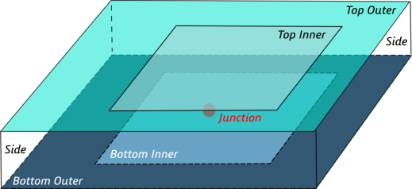
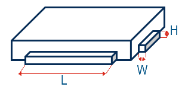
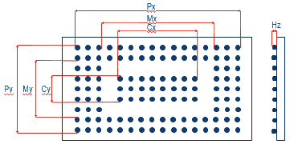
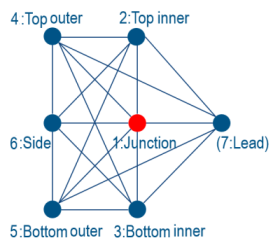

|
|
|
This object is used to create new Delphi model sources for the Conjugate Heat Transfer Solver.
The Delphi compact thermal model can be used to approximate the thermal behavior of single-die packages that can be effectively represented by a thermal resistance network. It is based on the Delphi methodology JESD15-4 described in the Delphi Compact Thermal Model Guideline published by the JEDEC standard Committee on Thermal Characterization.
Reset
Resets all internal settings to their default values.
Name ( name name )
Sets the name of the Delphi model source. Each source must have a unique name.
Rename ( name oldname, name newname )
Renames the Delphi model with the given oldname to the defined newname. A model with the new name must not already exist.
Folder ( name foldername )
Sets the name of the folder for the Delphi model under creation. The folder will be created if it does not exist. If the name is empty, then the Delphi model does not belong to a folder.
NewFolder ( name foldername )
Creates a new folder for Delphi models with the given name. The name of the new folder (foldername) must be unique. Otherwise no new folder will be created.
RenameFolder ( name oldname, name newname )
Renames an existing Delphi model folder from oldname to newname, if a folder with newname does not already exist. All items below the renamed folder will remain below the folder with the new name.
DeleteFolder ( string foldername )
Deletes an existing folder and all the contained elements.
Enable( bool flag )
Enables or disables the Delphi model under creation depending on flag. If flag is false, the Delphi model won't be considered for simulation.
EnableItem( name name, bool flag )
Enables or disables the (existing) Delphi model with the given name depending on flag. If flag is false, the Delphi model won't be considered for simulation.
Delete ( name name )
Deletes the Delphi model with the given name.
Set ( string parameterName, variant paramterValues, ... )
To define special parameters for a Delphi model, the command Set can be used. Available parameterNames are listed below. All settings must be made before the Create command is called.
|
parameterName |
parameterValues |
Default |
Meaning |
|
"Name" |
name itemName |
<empty / invalid> |
Specifies the name of the Delphi model under creation (same as ".Name" command) |
|
"Face" |
<empty / invalid> |
The top surface of the Delphi model package must be a planar face of an existing solid (brick). This solid is specified by solidName and the top surface is indicated by faceId which is the id of the face in the list of faces belonging to the specified solid. |
|
|
"OverwriteCaseEmissivity"
"CaseEmissivity" |
bool flag
double emissivity |
False
0.0 |
When enabled (flag = True), the user-defined emissivity is used to specify the upper package surface emissivity. Otherwise (flag = False), the emissivity of the material assigned to the package (Thermal) is used and the value of "CaseEmissivity" is ignored.. |
|
|
|
|
 |
|
"TopInnerSurfaceArea" |
double areaPercentage |
25 |
The top inner surface is a rectangular and centered patch on the upper package surface. It is defined by its surface area as a percentage of the top surface of the Delphi model package. |
|
"UseDifferentBottomSurfaceArea"
"BottomInnerSurfaceArea" |
bool flag
double areaPercentage |
True
25 |
The bottom inner surface is a rectangular and centered patch on the bottom package surface (opposite of the top surface). If flag = False, the bottom inner surface will have the same size as the top inner surface, as equal sizes are expected for top and bottom package surfaces. If flag = True, the bottom inner surface area is defined as a percentage of the bottom surface of the Delphi Model package. |
|
"ICPackagingType"
|
enum type { "None", "Peripheral leaded", "Area arrays" } |
"None" |
If the type "None" is specified, leads or metal alloy balls (area arrays) must be modeled by the customer. If the type “Peripheral leaded” is specified, the leads will be represented by blocks (associated to the lead node) whose dimensions are entered in further commands ("LeadLength", "LeadHeight", "LeadWidth"). If the type “Area arrays” is specified, the area arrays will be represented by blocks (associated to the lead node) whose dimensions are entered in further commands ("AreaArrayCx", "AreaArrayCy", "AreaArrayMx", "AreaArrayMy", "AreaArrayPx", "AreaArrayPy", "AreaArrayHz"). |
|
|
|
|
 Peripheral leaded |
|
"LeadLength" "LeadHeight" "LeadWidth" |
double lengthPercentage double heightPercentage double width |
70 5 0.05 |
The length and the height of a lead block are defined as a percentage of the length and the height of the adjacent package side. The width is the depth of the lead block. This value is considered only if the ICPackagingType is "Peripheral leaded" and if "LeadImprintOnly" is set to False. |
|
"LeadImprintOnly" |
bool flag |
False |
If flag = False, the blocks representing the leads will be built according to the dimensions entered by the user. In this case, the blocks will be associated to the lead node and will be part of the simulation, therefore they must receive a material assignment. This setting is relevant only for the ICPackagingType "Peripheral leaded". |
|
|
|
|
 Area arrays |
|
"AreaArrayCx" "AreaArrayCy" "AreaArrayMx" "AreaArrayMy" "AreaArrayPx" "AreaArrayPy" "AreaArrayHz" |
double Cx double Cy double Mx double My double Px double Py double Hz |
0 0 0 0 0 0 0 |
If the alloy balls are modeled as area arrays, i.e. if ICPackagingType is "Area arrays", the corresponding dimensions of these two thin rectangular layers can be described as depicted in the picture above: Px x Py and Mx x My are the outer and inner dimensions of the outer array, respectively, and Cx x Cy is the dimension of the inner array. Hz describes the thickness of these layers. |
|
"ICPackagingMaterial" |
name materialName |
"Copper (annealed)" |
Defines the material of the blocks representing the lead node (lead or area arrays). This setting will be considered only if ICPackagingType is "Peripheral leaded" and "LeadImprintOnly" is False or if ICPackagingType is "Area arrays". |
|
|
|
|
 NetworkThe junction node of the Delphi model is an internal node which doesn't interact with the package environment. The top inner, top outer, bottom inner, bottom outer and side nodes of the Delphi model are called surface or external nodes because they are associated to certain physical regions or patches located on the package surface, allowing them to interact with the package environment. The lead node is included in the network as external node if the ICPackagingType is "Peripheral leaded". Further internal nodes can be added if necessary by adding additional nodes to the node / resistance table. |
|
"NetworkNodeName" |
1, "Junction" 2, "Top inner" 3, "Bottom inner" 4, "Top outer" 5, "Bottom outer" 6, "Side" 7, "Lead" 8-20, "Internal node" |
Defines the name of the node with the given nodeIndex. The nodeIndex is an integer number between 1 and 20 indicating to which node the setting refers. Mind that the names of the junction and of the external nodes are fixed. They are automatically assigned to the indices 1 to 7, where nodeIndex = 1 belongs to nodeName = "Junction", nodeIndex = 2 belongs to the nodeName = "Top inner" etc. The name specification for these default nodes can be omitted. All further user-defined nodes will have the default name "Internal node" if not specified otherwise. Please note that maximum 13 additional inner nodes can be defined, i.e. maximum 20 nodes in total. |
|
|
"NetworkNodeCapacitance" |
0 |
Defines the capacitance of the node with the given nodeIndex. |
|
|
"NetworkNodePower" |
0 |
Defines the power of the node with the given nodeIndex. The power for external nodes (index 2 to 7) will ignored and can be omitted. |
|
|
"NetworkResistance" |
<unset / no connection> |
Defines the resistance between the node pair (nodeIindex1, nodeIndex2). The node / resistance table is assumed to be symmetric, so it is not necessary to repeat the same settings for node pair (nodeIindex2, nodeIndex1). If redundant settings are made, the last one wins over the previous ones. |
Create
Creates a Delphi model source. All required settings for this object have to be made before the Create command is called and will be checked for correctness and consistency during the creation state.
Name ("")
Set "Face" ("", 0)
Set "OverwriteCaseEmissivity" (False)
Set "TopInnerSurfaceAre" ("25")
Set "UseDifferentBottomSurfaceArea" (False)
Set "ICPackagingType" ("None")
Enable (True)
Folder ("")
With DelphiModel
.Reset
.Set "Name", "delphi model 1"
.Folder ""
.Enable "True"
.Set "Face", "component1:delphi block 1", "1"
.Set "OverwriteCaseEmissivity", "False"
.Set "CaseEmissivity", "0"
.Set "TopInnerSurfaceArea", "15"
.Set "UseDifferentBottomSurfaceArea", "True"
.Set "BottomInnerSurfaceArea", "35"
.Set "ICPackagingType", "Peripheral leaded"
.Set "LeadImprintOnly", "False"
.Set "LeadLength", "70"
.Set "LeadHeight", "15"
.Set "LeadWidth", "0.21"
.Set "ICPackagingMaterial", "Copper (annealed)"
.Set "NetworkNodeName", "1", "Junction"
.Set "NetworkNodeCapacitance", "1", "0"
.Set "NetworkNodePower", "1", "0"
.Set "NetworkNodeName", "2", "Top inner"
.Set "NetworkNodeCapacitance", "2", "5"
.Set "NetworkNodeName", "3", "Bottom inner"
.Set "NetworkNodeCapacitance", "3", "0"
.Set "NetworkNodeName", "4", "Top outer"
.Set "NetworkNodeCapacitance", "4", "0"
.Set "NetworkNodeName", "5", "Bottom outer"
.Set "NetworkNodeCapacitance", "5", "0"
.Set "NetworkNodeName", "6", "Side"
.Set "NetworkNodeCapacitance", "6", "0"
.Set "NetworkNodeName", "7", "Leads"
.Set "NetworkNodeCapacitance", "7", "0"
.Set "NetworkNodeName", "8", "Internal node 1"
.Set "NetworkNodeCapacitance", "8", "0"
.Set "NetworkNodePower", "8", "8.1"
.Set "NetworkNodeName", "10", "Another node"
.Set "NetworkNodeCapacitance", "10", "0"
.Set "NetworkNodePower", "10", "10.1"
.Create
End With